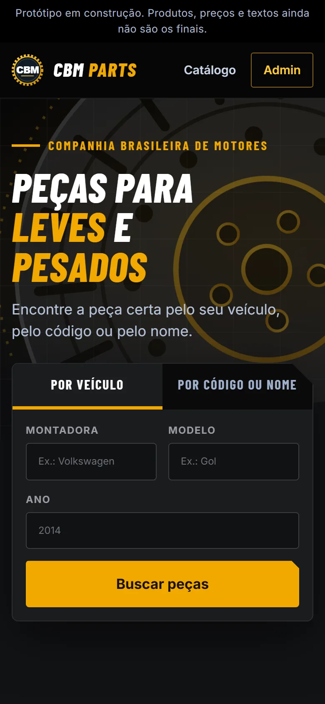

/01 · client project · paid client, in testing
CBM Parts
Web app · auto parts catalog with admin panel
Catalog with search by make, model and year, a page for each part and a login-protected panel where the owner adds and edits parts. Parts are stored in a database. Price and availability are agreed over WhatsApp, as the owner asked.
- HTML
- CSS
- JavaScript
- REST API
- SQL database (D1)
- Cloudflare
- Back-end
- Own API for parts, categories, login and photos, running on Cloudflare.
- Database
- SQL database with 8 tables and search by make, model and year.
- Login
- Admin panel with an encrypted password and a secure session.

